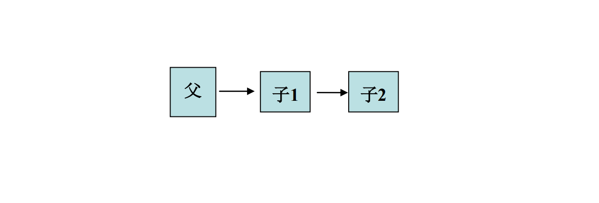
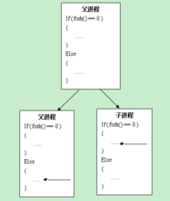
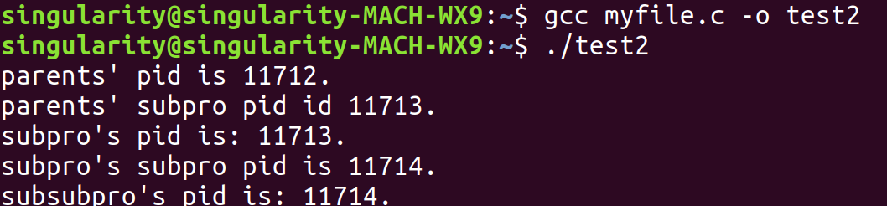
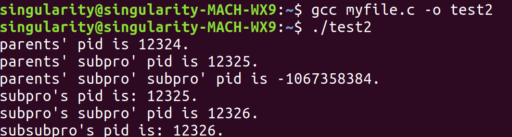

<!DOCTYPE html>
<html>
<head><meta name="generator" content="Hexo 3.8.0">
  <meta charset="utf-8">
  

  
  <title>process_management | Hexo</title>
  <meta name="viewport" content="width=device-width, initial-scale=1, maximum-scale=1">
  <meta name="description" content="Linux Programming — Process managementForwardIt is really excited that we start to get touch in Linux Programming. It’s truely different from my old coding life, not like implementing a complex librar">
<meta name="keywords" content="os,process management">
<meta property="og:type" content="article">
<meta property="og:title" content="process_management">
<meta property="og:url" content="http://yoursite.com/2019/05/13/process-management/index.html">
<meta property="og:site_name" content="Hexo">
<meta property="og:description" content="Linux Programming — Process managementForwardIt is really excited that we start to get touch in Linux Programming. It’s truely different from my old coding life, not like implementing a complex librar">
<meta property="og:locale" content="default">
<meta property="og:image" content="http://yoursite.com/2019/05/13/process-management/task.png">
<meta property="og:image" content="http://yoursite.com/2019/05/13/process-management/fork.png">
<meta property="og:image" content="http://yoursite.com/2019/05/13/process-management/layer_by_layer.png">
<meta property="og:image" content="http://yoursite.com/2019/05/13/process-management/before_wait.png">
<meta property="og:image" content="http://yoursite.com/2019/05/13/process-management/afer_wait.png">
<meta property="og:updated_time" content="2019-05-13T08:04:07.647Z">
<meta name="twitter:card" content="summary">
<meta name="twitter:title" content="process_management">
<meta name="twitter:description" content="Linux Programming — Process managementForwardIt is really excited that we start to get touch in Linux Programming. It’s truely different from my old coding life, not like implementing a complex librar">
<meta name="twitter:image" content="http://yoursite.com/2019/05/13/process-management/task.png">
  
    <link rel="alternate" href="/atom.xml" title="Hexo" type="application/atom+xml">
  
  
    <link rel="icon" href="/favicon.png">
  
  
    <link href="//fonts.googleapis.com/css?family=Source+Code+Pro" rel="stylesheet" type="text/css">
  
  <link rel="stylesheet" href="/css/style.css">
</head>
</html>
<body>
  <div id="container">
    <div id="wrap">
      <header id="header">
  <div id="banner"></div>
  <div id="header-outer" class="outer">
    <div id="header-title" class="inner">
      <h1 id="logo-wrap">
        <a href="/" id="logo">Hexo</a>
      </h1>
      
    </div>
    <div id="header-inner" class="inner">
      <nav id="main-nav">
        <a id="main-nav-toggle" class="nav-icon"></a>
        
          <a class="main-nav-link" href="/">Home</a>
        
          <a class="main-nav-link" href="/archives">Archives</a>
        
      </nav>
      <nav id="sub-nav">
        
          <a id="nav-rss-link" class="nav-icon" href="/atom.xml" title="RSS Feed"></a>
        
        <a id="nav-search-btn" class="nav-icon" title="Search"></a>
      </nav>
      <div id="search-form-wrap">
        <form action="//google.com/search" method="get" accept-charset="UTF-8" class="search-form"><input type="search" name="q" class="search-form-input" placeholder="Search"><button type="submit" class="search-form-submit">&#xF002;</button><input type="hidden" name="sitesearch" value="http://yoursite.com"></form>
      </div>
    </div>
  </div>
</header>
      <div class="outer">
        <section id="main"><article id="post-process-management" class="article article-type-post" itemscope="" itemprop="blogPost">
  <div class="article-meta">
    <a href="/2019/05/13/process-management/" class="article-date">
  <time datetime="2019-05-13T05:50:29.000Z" itemprop="datePublished">2019-05-13</time>
</a>
    
  <div class="article-category">
    <a class="article-category-link" href="/categories/Linux/">Linux</a>
  </div>

  </div>
  <div class="article-inner">
    
    
      <header class="article-header">
        
  
    <h1 class="article-title" itemprop="name">
      process_management
    </h1>
  

      </header>
    
    <div class="article-entry" itemprop="articleBody">
      
        <h1 id="Linux-Programming-—-Process-management"><a href="#Linux-Programming-—-Process-management" class="headerlink" title="Linux Programming — Process management"></a>Linux Programming — Process management</h1><h2 id="Forward"><a href="#Forward" class="headerlink" title="Forward"></a>Forward</h2><p>It is really excited that we start to get touch in Linux Programming. It’s truely different from my old coding life, not like implementing a complex library management system or focusing on a hard algorithm problem. It’s more about computer itself, i mean, we are talking about process how a computer really works. And actually this is much complex than a library management system and much mental than algorithm problems. And you can finally tell others you major in CS or CE, not SE after experiencing these.</p>
<h2 id="The-very-first-task"><a href="#The-very-first-task" class="headerlink" title="The very first task"></a>The very first task</h2><p>Here’s the description of the task in Chinese:</p>
<p><strong>每个进程都执行自己独立的程序，打印自己的pid，每个父进程打印其子进程的pid;</strong></p>
<p>and the picture:</p>
<p></p>
<p>I had to say it’s really confusing: does parent have to print son2’s pid? If it does, then this task would be quiet difficult as the very first task. Most of my classmates thought this way or, never gave a thought on it, and soon they finished their work. Only a bit idiots like me, made it really complex. But here is my principle:</p>
<p><strong>Make things easy for your client while making it hard for yourself. Never waste a chance of challenging yourself.</strong></p>
<p>So next i will do in my complex way.</p>
<h2 id="PID-and-fork"><a href="#PID-and-fork" class="headerlink" title="PID and fork"></a>PID and fork</h2><p>what is PID:</p>
<ul>
<li>Process Identification</li>
<li>unique and binded to process</li>
</ul>
<p>what is fork:</p>
<ul>
<li>subprocess <strong>copy</strong> parent process.</li>
<li>in subprocess, fork return 0. </li>
<li>in parent process, fork reuturn <strong>subprocess pid</strong></li>
<li>if error, return -1;</li>
</ul>
<p></p>
<p>remember to include header file:</p>
<pre><code>#include &quot;unistd.h&quot;    //os api access
#include &quot;sys/types.h&quot;    //so you can use pid_t
</code></pre><p>so with a little time, we can finish the code below:</p>
<pre><code>#include &lt;stdio.h&gt;
#include &lt;unistd.h&gt;
#include &lt;sys/types.h&gt;

int main(){
    pid_t subpid = fork();
    if(subpid == 0){    //subprocess 
        pid_t subsubpid = fork(); 
        if(subsubpid == 0){    //subsubprocess
                printf(&quot;subsubpro&apos;s pid is: %d.\n&quot;, getpid());
        }
        else{
            printf(&quot;subpro&apos;s pid is: %d.\n&quot;, getpid());
            printf(&quot;subpro&apos;s subpro&apos; pid is %d.\n&quot;, subsubpid);
        }
    }
    else{    //parent process
        printf(&quot;parents&apos; pid is %d.\n&quot;, getpid());
         printf(&quot;parents&apos; subpro&apos; pid is %d.\n&quot;, subpid);
    }
    return 0;
}
</code></pre><p>and here is the result:</p>
<h2 id="use-pipe"><a href="#use-pipe" class="headerlink" title="use pipe"></a>use pipe</h2><p>Codes above didn’t move the biggest stone on our way: how parent print son2’s PID? Use pipe like this way:</p>
<pre><code>int fd[2];
pipe(fd);
...
{    // in subprocess
    ...
    close(fd[0]);    // close parents&apos; read
    write(fd[1], &amp;subsubpid, sizeof(pid_t));    //write pid        
    ...
}
...
{    // in parent process
    ...
    close(fd[1]);    // close child&apos;s write
    read(fd[0], &amp;subsubpid, sizeof(pid_t));    //read from pipe
    printf(&quot;parents&apos; subpro&apos; subpro&apos; pid is %d.\n&quot;, subsubpid);
    ...
}
</code></pre><p>You can see we thought really carefully by using function <strong>close()</strong>, intending to maintain some kind of order.</p>
<p>Here’s the code and the result:</p>
<pre><code>#include &lt;stdio.h&gt;
#include &lt;unistd.h&gt;
#include &lt;sys/types.h&gt;

int main(){
    int fd[2];
    pipe(fd);
    pid_t subpid = fork();
    pid_t subsubpid;
    if(subpid == 0){
        pid_t subsubpid = fork(); 
        if(subsubpid == 0){
                printf(&quot;subsubpro&apos;s pid is: %d.\n&quot;, getpid());
        }
        else{
            printf(&quot;subpro&apos;s pid is: %d.\n&quot;, getpid());
            printf(&quot;subpro&apos;s subpro&apos; pid is %d.\n&quot;, subsubpid);
            close(fd[0]);    // close parents&apos; read
            write(fd[1], &amp;subsubpid, sizeof(pid_t));    //write pid
        }
    }
    else{
        printf(&quot;parents&apos; pid is %d.\n&quot;, getpid());
         printf(&quot;parents&apos; subpro&apos; pid is %d.\n&quot;, subpid);
        close(fd[1]);    // close child&apos;s write
        read(fd[0], &amp;subsubpid, sizeof(pid_t));    //read from pipe
        printf(&quot;parents&apos; subpro&apos; subpro&apos; pid is %d.\n&quot;, subsubpid);
    }
    return 0;
}    
</code></pre><p></p>
<p>It’s surprise to see large negative number above, also disappointed to find that your efforts to main order in vain. Be patient and success is close.</p>
<h2 id="parent-wait"><a href="#parent-wait" class="headerlink" title="parent wait"></a>parent wait</h2><p>To make process in order, we need something efficient: function <strong>wait()</strong></p>
<p>To use wait, you may alse need a <strong>status</strong>:</p>
<pre><code>#include &lt;stdio.h&gt;
#include &lt;unistd.h&gt;
#include &lt;sys/types.h&gt;
#include &lt;wait.h&gt;

int main(){
    int status = -1;
    int fd[2];
    pipe(fd);
    pid_t subpid = fork();
    pid_t subsubpid;
    if(subpid == 0){
        pid_t subsubpid = fork(); 
        if(subsubpid == 0){
                printf(&quot;subsubpro&apos;s pid is: %d.\n&quot;, getpid());
        }
        else{
            printf(&quot;subpro&apos;s pid is: %d.\n&quot;, getpid());
            printf(&quot;subpro&apos;s subpro&apos; pid is %d.\n&quot;, subsubpid);
            close(fd[0]);    // close parents&apos; read
            write(fd[1], &amp;subsubpid, sizeof(pid_t));    //write pid
            WEXITSTATUS(status);
        }
    }
    else{
        wait(&amp;status);
        printf(&quot;parents&apos; pid is %d.\n&quot;, getpid());
         printf(&quot;parents&apos; subpro&apos; pid is %d.\n&quot;, subpid);
        close(fd[1]);    // close child&apos;s write
        read(fd[0], &amp;subsubpid, sizeof(pid_t));    //read from pipe
        printf(&quot;parents&apos; subpro&apos; subpro&apos; pid is %d.\n&quot;, subsubpid);
    }
    return 0;
}    
</code></pre><p>Finally we get what we want!:</p>
<p></p>
<h2 id="epilogue"><a href="#epilogue" class="headerlink" title="epilogue"></a>epilogue</h2><p>Hope this blog is helpful, and wish i can use vim as proficiently as sublime someday… </p>

      
    </div>
    <footer class="article-footer">
      <a data-url="http://yoursite.com/2019/05/13/process-management/" data-id="cjvm36z3t000fogupks8qnfgk" class="article-share-link">Share</a>
      
      
  <ul class="article-tag-list"><li class="article-tag-list-item"><a class="article-tag-list-link" href="/tags/os/">os</a></li><li class="article-tag-list-item"><a class="article-tag-list-link" href="/tags/process-management/">process management</a></li></ul>

    </footer>
  </div>
  
    
<nav id="article-nav">
  
  
    <a href="/2019/05/12/normal-form/" id="article-nav-older" class="article-nav-link-wrap">
      <strong class="article-nav-caption">Older</strong>
      <div class="article-nav-title">normal form</div>
    </a>
  
</nav>

  
</article>

</section>
        
          <aside id="sidebar">
  
    
  <div class="widget-wrap">
    <h3 class="widget-title">Categories</h3>
    <div class="widget">
      <ul class="category-list"><li class="category-list-item"><a class="category-list-link" href="/categories/Linux/">Linux</a></li><li class="category-list-item"><a class="category-list-link" href="/categories/algorithm/">algorithm</a></li><li class="category-list-item"><a class="category-list-link" href="/categories/cppdetails/">cppdetails</a></li><li class="category-list-item"><a class="category-list-link" href="/categories/project-record/">project record</a><ul class="category-list-child"><li class="category-list-item"><a class="category-list-link" href="/categories/project-record/scientific-research/">scientific research</a><ul class="category-list-child"><li class="category-list-item"><a class="category-list-link" href="/categories/project-record/scientific-research/theory/">theory</a></li></ul></li></ul></li><li class="category-list-item"><a class="category-list-link" href="/categories/scientific-research/">scientific research</a></li><li class="category-list-item"><a class="category-list-link" href="/categories/theory/">theory</a></li></ul>
    </div>
  </div>


  
    
  <div class="widget-wrap">
    <h3 class="widget-title">Tags</h3>
    <div class="widget">
      <ul class="tag-list"><li class="tag-list-item"><a class="tag-list-link" href="/tags/CG/">CG</a></li><li class="tag-list-item"><a class="tag-list-link" href="/tags/FS/">FS</a></li><li class="tag-list-item"><a class="tag-list-link" href="/tags/NLP/">NLP</a></li><li class="tag-list-item"><a class="tag-list-link" href="/tags/NN/">NN</a></li><li class="tag-list-item"><a class="tag-list-link" href="/tags/bioinformatics/">bioinformatics</a></li><li class="tag-list-item"><a class="tag-list-link" href="/tags/compiler/">compiler</a></li><li class="tag-list-item"><a class="tag-list-link" href="/tags/computer-architecture/">computer architecture</a></li><li class="tag-list-item"><a class="tag-list-link" href="/tags/cpp/">cpp</a></li><li class="tag-list-item"><a class="tag-list-link" href="/tags/discrete-mathematics/">discrete mathematics</a></li><li class="tag-list-item"><a class="tag-list-link" href="/tags/memory-management/">memory management</a></li><li class="tag-list-item"><a class="tag-list-link" href="/tags/normal-form/">normal form</a></li><li class="tag-list-item"><a class="tag-list-link" href="/tags/os/">os</a></li><li class="tag-list-item"><a class="tag-list-link" href="/tags/process-management/">process management</a></li><li class="tag-list-item"><a class="tag-list-link" href="/tags/project/">project</a></li><li class="tag-list-item"><a class="tag-list-link" href="/tags/python/">python</a></li><li class="tag-list-item"><a class="tag-list-link" href="/tags/python-data-processing/">python data processing</a></li><li class="tag-list-item"><a class="tag-list-link" href="/tags/roughset/">roughset</a></li></ul>
    </div>
  </div>


  
    
  <div class="widget-wrap">
    <h3 class="widget-title">Tag Cloud</h3>
    <div class="widget tagcloud">
      <a href="/tags/CG/" style="font-size: 10px;">CG</a> <a href="/tags/FS/" style="font-size: 10px;">FS</a> <a href="/tags/NLP/" style="font-size: 10px;">NLP</a> <a href="/tags/NN/" style="font-size: 10px;">NN</a> <a href="/tags/bioinformatics/" style="font-size: 10px;">bioinformatics</a> <a href="/tags/compiler/" style="font-size: 10px;">compiler</a> <a href="/tags/computer-architecture/" style="font-size: 10px;">computer architecture</a> <a href="/tags/cpp/" style="font-size: 10px;">cpp</a> <a href="/tags/discrete-mathematics/" style="font-size: 10px;">discrete mathematics</a> <a href="/tags/memory-management/" style="font-size: 10px;">memory management</a> <a href="/tags/normal-form/" style="font-size: 10px;">normal form</a> <a href="/tags/os/" style="font-size: 10px;">os</a> <a href="/tags/process-management/" style="font-size: 10px;">process management</a> <a href="/tags/project/" style="font-size: 20px;">project</a> <a href="/tags/python/" style="font-size: 10px;">python</a> <a href="/tags/python-data-processing/" style="font-size: 10px;">python data processing</a> <a href="/tags/roughset/" style="font-size: 10px;">roughset</a>
    </div>
  </div>

  
    
  <div class="widget-wrap">
    <h3 class="widget-title">Archives</h3>
    <div class="widget">
      <ul class="archive-list"><li class="archive-list-item"><a class="archive-list-link" href="/archives/2019/05/">May 2019</a></li><li class="archive-list-item"><a class="archive-list-link" href="/archives/2019/04/">April 2019</a></li><li class="archive-list-item"><a class="archive-list-link" href="/archives/2019/03/">March 2019</a></li></ul>
    </div>
  </div>


  
    
  <div class="widget-wrap">
    <h3 class="widget-title">Recent Posts</h3>
    <div class="widget">
      <ul>
        
          <li>
            <a href="/2019/05/13/process-management/">process_management</a>
          </li>
        
          <li>
            <a href="/2019/05/12/normal-form/">normal form</a>
          </li>
        
          <li>
            <a href="/2019/05/11/computer-architecture/">computer_architecture</a>
          </li>
        
          <li>
            <a href="/2019/04/30/NNDL/">NNDL</a>
          </li>
        
          <li>
            <a href="/2019/04/30/co-occurrence/">co-occurrence</a>
          </li>
        
      </ul>
    </div>
  </div>

  
</aside>
        
      </div>
      <footer id="footer">
  
  <div class="outer">
    <div id="footer-info" class="inner">
      &copy; 2019 John Doe<br>
      Powered by <a href="http://hexo.io/" target="_blank">Hexo</a>
    </div>
  </div>
</footer>
    </div>
    <nav id="mobile-nav">
  
    <a href="/" class="mobile-nav-link">Home</a>
  
    <a href="/archives" class="mobile-nav-link">Archives</a>
  
</nav>
    

<script src="//ajax.googleapis.com/ajax/libs/jquery/2.0.3/jquery.min.js"></script>


  <link rel="stylesheet" href="/fancybox/jquery.fancybox.css">
  <script src="/fancybox/jquery.fancybox.pack.js"></script>


<script src="/js/script.js"></script>


  </div>
</body>
</html>